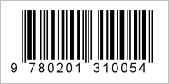

Viivakoodeja on painettu lähes kaikkiin myytäviin tuotteisiin. Tuotteissa olevat viivakoodit ovat tyypillisesti joko UPC ja EAN koodeja. Viivakoodit näyttävät tältä:

Viivakoodeissa on 13 numeroa, jonka avulla tuote tunnistetaan. Jokaiselle tuotteella on oma yksittäinen numerosarja.
Viinien viivakoodi löytyy jokaisesta pullosta. Alkossa myös hyllyssä olevassa hintalapussa on viinin viivakoodi, josta sen voi kätevästi lukea.